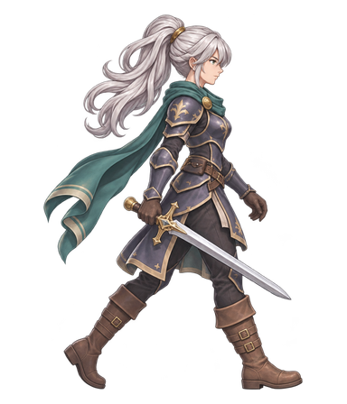

GPT 원화를 유지하며 로컬 모델이 동작을 만드는 실험입니다. Ludo 26장은 이미 확보한 동작 참조입니다. 이번 실험의 추가 유료 생성은 0회입니다. 원화와 동작 참조를 재사용한 결과이며, 새로운 동작의 제작 능력까지 검증한 것은 아닙니다.

같은 프레임 번호로 재생합니다. 발 접지·검과 손의 연결·긴 포니테일·망토·반복 경계를 비교하세요. 자동 검사 점수와 사람의 시각 검수는 별개입니다.
기존 Ludo·GPT B 비교 · 공동 검수 대시보드